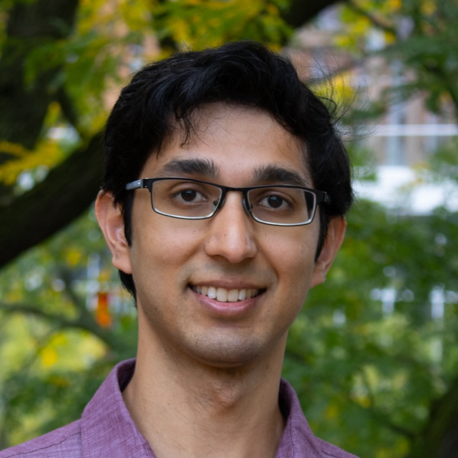

Tej Chajed
chajed@wisc.edu
Computer Sciences 7361
I'm Tej Chajed, an assistant professor in Computer Science at the University of Wisconsin-Madison.
I work on formal verification of systems software — I implement systems
and prove they do what they're supposed to.
Prior to joining UW-Madison I did a one-year postdoc at VMware Research, and before that I got my PhD from MIT in the PDOS group.
I'm actively looking for new students! If you're interested in working with me please set up a time to chat about potential projects.

Research
Even critical systems software has bugs — for
example, file systems have bugs that occasionally lead to users losing data. My
research aims to write systems software that always does what it's supposed to.
We do this with formal verification: we write a precise specification of what
the system is supposed to do and prove that the implementation meets the
specification. My research has culminated in DaisyNFS, a verified,
concurrent file system that gets good performance. The path to verifying
DaisyNFS involved developing new frameworks and tools, including
Perennial, a framework for reasoning about crash safety and concurrency,
and Goose, a system for connecting the proofs to Go code.
I do a lot of work on Coq-related things, including maintaining a
list of Coq tricks for the
advanced user and contributing to Iris.
During my PhD, I was a communication Fellow in the EECS
Communication Lab, where I helped students with technical communication. I'm still passionate
about helping people with writing and presenting, so please reach out if you think I could help with something!
Teaching
CS 839: Systems verification (Fall 2025)
Teaching release (Spring 2025)
CS 839: Systems verification (Fall 2024)
CS 537: Operating systems (Spring 2024)
CS 839: Protocol verification (Fall 2023)
As a graduate student, I helped create 6.826 (Principles of Computer Systems), a class on systems
verification, and in particular I created the lab assignments. I was a TA for
the class in Fall 2020,
Fall 2019, and
Fall 2017.
Publications
Tony Nuda Zhang, Keshav Singh, Tej Chajed, Manos Kapritsos, and Bryan Parno
Andrea Lattuada, Travis Hance, Jay Bosamiya, Matthias Brun, Chanhee Cho, Hayley LeBlanc, Pranav Srinivasan, Reto Achermann, Tej Chajed, Chris Hawblitzel, Jon Howell, Jacob R. Lorch, Oded Padon, and Bryan Parno
Jing Liu, Xiangpeng Hao, Andrea Arpaci-Dusseau, Remzi Arpaci-Dusseau, and Tej Chajed
Eden Frenkel, Tej Chajed, Oded Padon, and Sharon Shoham
Xudong Sun, Wenjie Ma, Jiawei Tyler Gu, Zicheng Ma, Tej Chajed, Jon Howell, Andrea Lattuada, Oded Padon, Lalith Suresh, Adriana Szekeres, and Tianyin Xu
Tony Nuda Zhang, Travis Hance, Manos Kapritsos, Tej Chajed, and Bryan Parno
Matthias Brun, Reto Achermann, Tej Chajed, Jon Howell, Gerd Zellweger, and Andrea Lattuada
Mihai Budiu, Tej Chajed, Frank McSherry, Leonid Ryzhyk, and Val Tannen
Tej Chajed
Tej Chajed, Joseph Tassarotti, Mark Theng, M. Frans Kaashoek, and Nickolai Zeldovich
Tej Chajed, Joseph Tassarotti, Mark Theng, Ralf Jung, M. Frans Kaashoek, and Nickolai Zeldovich
Tej Chajed
Tej Chajed, Joseph Tassarotti, M. Frans Kaashoek, and Nickolai Zeldovich
Tej Chajed, Joseph Tassarotti, M. Frans Kaashoek, and Nickolai Zeldovich
Tahina Ramananandro, Antoine Delignat-Lavaud, Cédric Fournet, Nikhil Swamy, Tej Chajed, Nadim Kobeissi, and Jonathan Protzenko
Tej Chajed, Joseph Tassarotti, M. Frans Kaashoek, and Nickolai Zeldovich
Tej Chajed, M. Frans Kaashoek, Butler Lampson, and Nickolai Zeldovich
Atalay İleri, Tej Chajed, Adam Chlipala, M. Frans Kaashoek, and Nickolai Zeldovich
Haogang Chen, Tej Chajed, Alex Konradi, Stephanie Wang, Atalay İleri, Adam Chlipala, M. Frans Kaashoek, and Nickolai Zeldovich
Tej Chajed, Adam Chlipala, M. Frans Kaashoek, and Nickolai Zeldovich
Tej Chajed, Haogang Chen, Adam Chlipala, M. Frans Kaashoek, Nickolai Zeldovich, and Daniel Ziegler
Haogang Chen, Daniel Ziegler, Tej Chajed, Adam Chlipala, M. Frans Kaashoek, and Nickolai Zeldovich
Tej Chajed, Jon Gjengset, Jelle van den Hooff, M. Frans Kaashoek, James Mickens, Robert Morris, and Nickolai Zeldovich
Service
How to pronounce my name
"Tej" rhymes with "page", and Chajed is pronounced as written (CHA-jed).